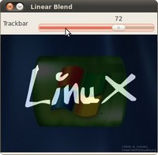
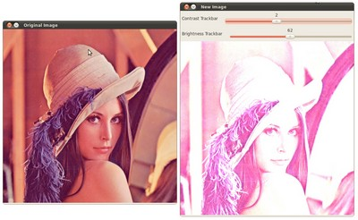

Adding a Trackbar to our applications!
In the previous tutorials (about linear blending and the brightness and contrast adjustments) you might have noted that we needed to give some input to our programs, such as \(\alpha\) and \(beta\). We accomplished that by entering this data using the Terminal
Well, it is time to use some fancy GUI tools. OpenCV provides some GUI utilities (highgui.hpp) for you. An example of this is a Trackbar

In this tutorial we will just modify our two previous programs so that they get the input information from the trackbar.
Goals
In this tutorial you will learn how to:
- Add a Trackbar in an OpenCV window by using cv::createTrackbar
Code
Let’s modify the program made in the tutorial Adding (blending) two images using OpenCV. We will let the user enter the \(\alpha\) value by using the Trackbar. This tutorial code’s is shown lines below. You can also download it from here
#include "opencv2/imgcodecs.hpp" #include "opencv2/highgui.hpp" #include <stdio.h> using namespace cv; const int alpha_slider_max = 100; int alpha_slider; double alpha; double beta; Mat src1; Mat src2; Mat dst; static void on_trackbar( int, void* ) { alpha = (double) alpha_slider/alpha_slider_max ; beta = ( 1.0 - alpha ); addWeighted( src1, alpha, src2, beta, 0.0, dst); imshow( "Linear Blend", dst ); } int main( void ) { src1 = imread("../data/LinuxLogo.jpg"); src2 = imread("../data/WindowsLogo.jpg"); if( src1.empty() ) { printf("Error loading src1 \n"); return -1; } if( src2.empty() ) { printf("Error loading src2 \n"); return -1; } alpha_slider = 0; namedWindow("Linear Blend", WINDOW_AUTOSIZE); // Create Window char TrackbarName[50]; sprintf( TrackbarName, "Alpha x %d", alpha_slider_max ); createTrackbar( TrackbarName, "Linear Blend", &alpha_slider, alpha_slider_max, on_trackbar ); on_trackbar( alpha_slider, 0 ); waitKey(0); return 0; }
Explanation
We only analyze the code that is related to Trackbar:
First, we load two images, which are going to be blended.
src1 = imread("../data/LinuxLogo.jpg"); src2 = imread("../data/WindowsLogo.jpg");
To create a trackbar, first we have to create the window in which it is going to be located. So:
namedWindow("Linear Blend", WINDOW_AUTOSIZE); // Create Window
Now we can create the Trackbar:
char TrackbarName[50]; sprintf( TrackbarName, "Alpha x %d", alpha_slider_max ); createTrackbar( TrackbarName, "Linear Blend", &alpha_slider, alpha_slider_max, on_trackbar );
Note the following:
- Our Trackbar has a label TrackbarName
- The Trackbar is located in the window named Linear Blend
- The Trackbar values will be in the range from \(0\) to alpha_slider_max (the minimum limit is always zero).
- The numerical value of Trackbar is stored in alpha_slider
- Whenever the user moves the Trackbar, the callback function on_trackbar is called
Finally, we have to define the callback function on_trackbar
static void on_trackbar( int, void* ) { alpha = (double) alpha_slider/alpha_slider_max ; beta = ( 1.0 - alpha ); addWeighted( src1, alpha, src2, beta, 0.0, dst); imshow( "Linear Blend", dst ); }
Note that:
- We use the value of alpha_slider (integer) to get a double value for alpha.
- alpha_slider is updated each time the trackbar is displaced by the user.
- We define src1, src2, dist, alpha, alpha_slider and beta as global variables, so they can be used everywhere.
Result
Our program produces the following output:
As a manner of practice, you can also add two trackbars for the program made in Changing the contrast and brightness of an image!. One trackbar to set \(\alpha\) and another for set \(\beta\). The output might look like:
